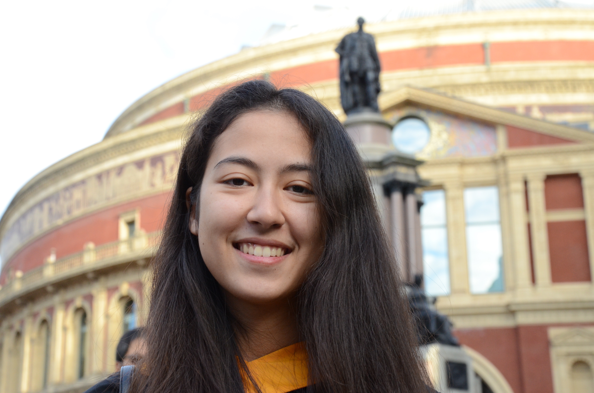
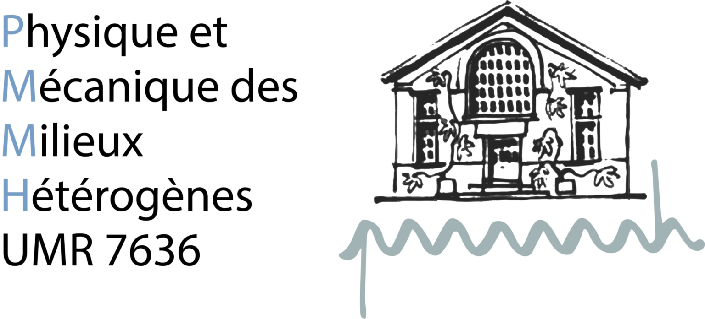
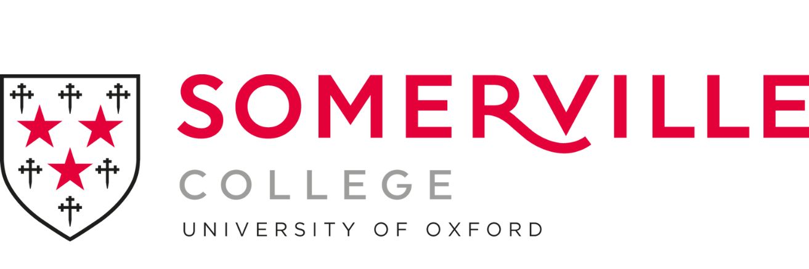
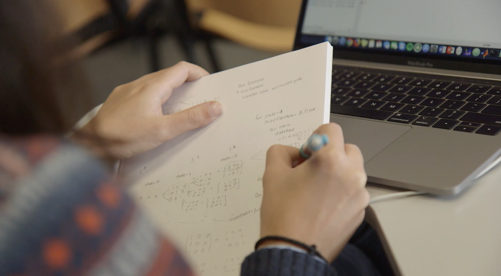
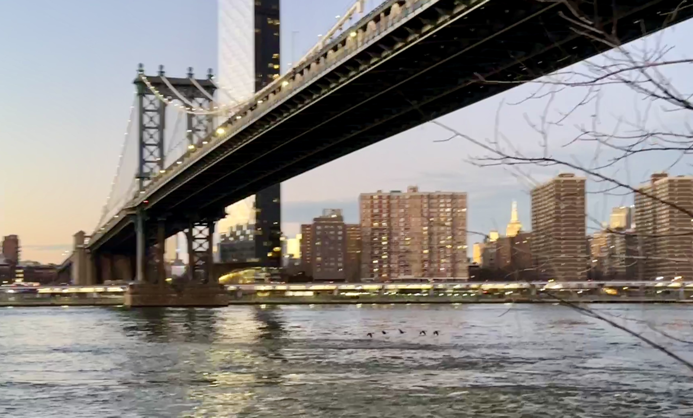

About
christiana.mavroyiakoumou@espci.fr
Room 104A, PMMH
CNRS (UMR 7636) – ESPCI Paris
Sorbonne Université
Barre Cassan Bât A 1er étage Case 18
7 Quai Saint Bernard, 75005 Paris
France




Birds flying in a line at the East River (2/3/24)
Research Information
I am a CNRS researcher (Chargée de Recherche, Section 12) at the Physique et Mécanique des Milieux Hétérogènes (PMMH) lab in Paris, France, which belongs to four parent institutions: CNRS, ESPCI Paris–PSL, Sorbonne Université, and Université Paris Cité.
I am also a Fulford Junior Research Fellow at Somerville College of the University of Oxford.
I am interested in using modeling and numerical simulations to study fluid dynamical problems, with an emphasis on fluid-structure interactions. Currently I am working on understanding the role of flow interactions in flying bird formations and the hydrodynamics of swimming fish. I also study interactions between vortices and free surfaces.
Prior to joining the PMMH lab, I was a Hooke Research Fellow at the Mathematical Institute of the University of Oxford, affiliated with the Oxford Centre for Industrial and Applied Mathematics (OCIAM).
From 2022 to 2025, I was a Courant Instructor/Assistant Professor at the Courant Institute of Mathematical Sciences (New York University) working in the Applied Math Lab, primarily with Leif Ristroph and Jun Zhang.
My PhD research focused on the dynamics of extensible membranes in inviscid flow. My advisor was Silas Alben and my co-advisor was Karthik Duraisamy.
Before that, I worked on modeling the manufacture of microstructured optical fibers and on the leapfrogging motion of vortex pairs.
News & Recent Updates
- New papers
- Flapping strategies for flying formations, J. Chico-Vázquez, C. Mavroyiakoumou [arXiv: 2601.12920], to appear in Proc. R. Soc. A (2026)
- Modeling flying formations as flow-mediated matter, C. Mavroyiakoumou, J. Wu, L. Ristroph, Phys. Rev. Fluids, 11, 063103 (2026)
*Editors' Suggestion*
- Flow interactions and forward flight dynamics of tandem flapping wings, F. Fang, C. Mavroyiakoumou, L. Ristroph, M.J. Shelley, J. Fluid Mech., Volume 1034, A51 (2026)
Education
Awards & Scholarships
- Fulford Junior Research Fellowship, Somerville College, University of Oxford, 2025-2027
- Hooke Research Fellowship, Mathematical Institute, University of Oxford, 2025–2028
- Joseph B. Keller Postdoctoral Fellowship, New York University, 2023-2024
- Peter Smereka Award for Best Applied Math Thesis, University of Michigan, 2022
- ProQuest Distinguished Dissertation Award, Honorable Mention, University of Michigan, 2022
- SIAM Student Chapter Certificate of Recognition, 2022
- Rackham Predoctoral Fellowship, University of Michigan, 2021-2022
- MCAIM Award, University of Michigan, 2021-2022
- Rackham International Student Fellowship, University of Michigan, 2018-2019
- Michigan Institute for Computational Discovery and Engineering (MICDE) Fellowship, University of Michigan, 2017-2018
- Mathematics Department Graduate Fellowship, University of Michigan, Summer 2017, 2019, 2020
- UROP Award for outstanding research project, Imperial College London, Department of Mathematics, October 2015
- Funding for Undergraduate Research Opportunities Programme (UROP)
- Dynamics of Interacting Vortices, Imperial College London, Summer 2015
- The QRD and SVD of matrices over a real algebra, Imperial College London, Summer 2014